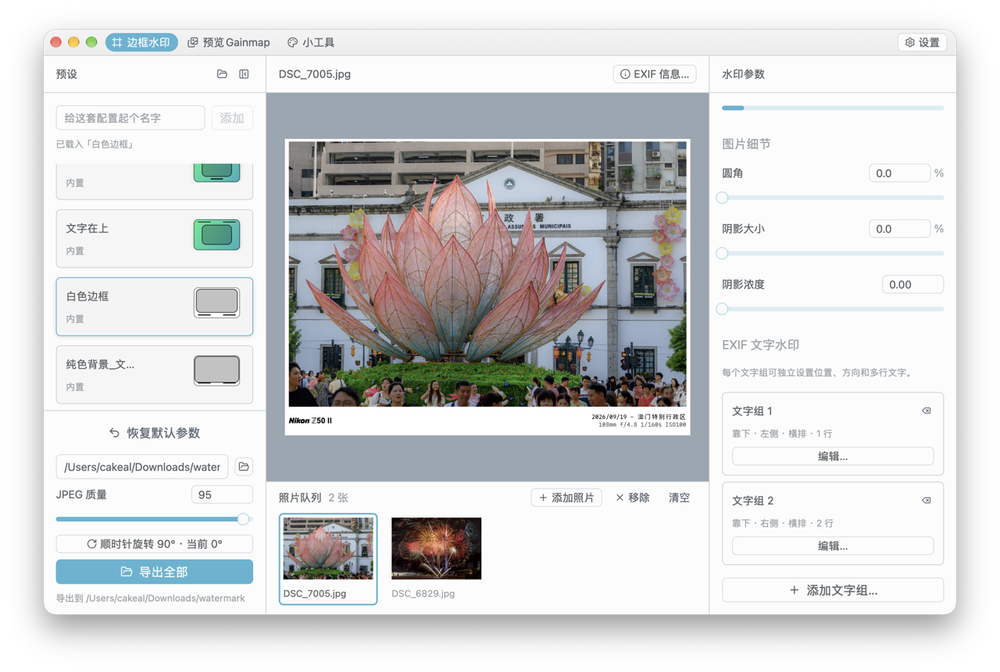
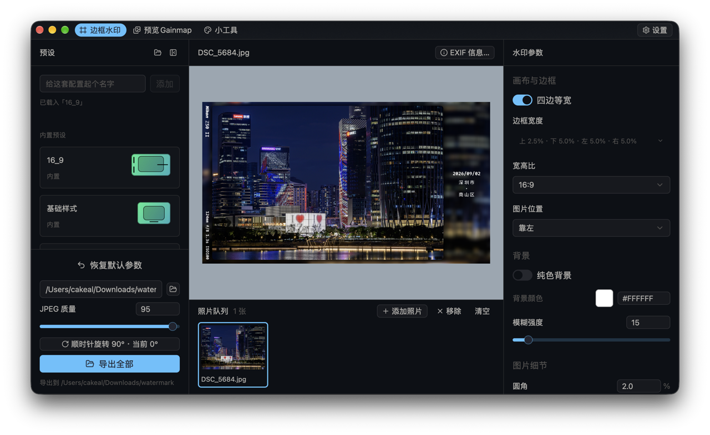
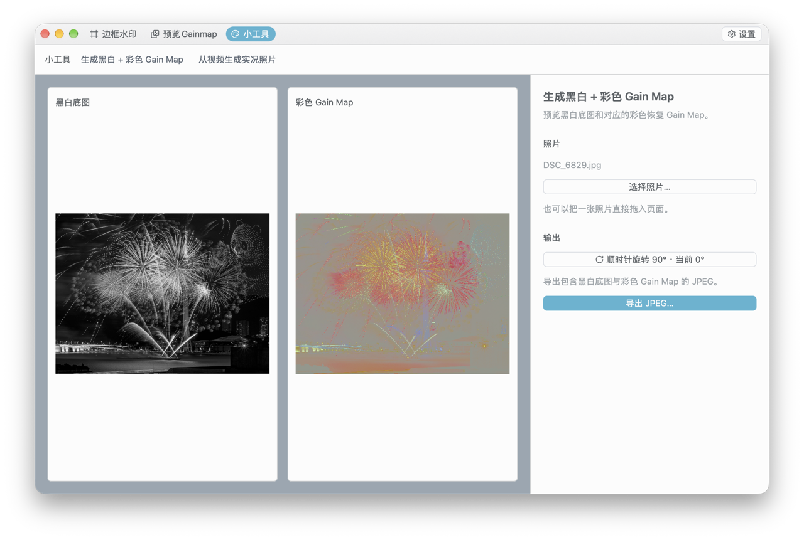
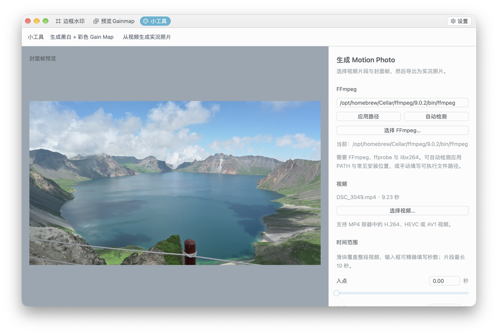

边框与画布
调节四边留白、圆角、阴影和背景，也能指定 16:9 等宽高比与照片位置。
01 / 效果展示
从克制的白边，到自由构图的宽画幅。所见即所得的预览，让微调成为创作的一部分。


02 / 创作工具
一组足够细致的工具，装进简洁的桌面工作流。
调节四边留白、圆角、阴影和背景，也能指定 16:9 等宽高比与照片位置。
文字组可放在照片四周。拍摄参数、时间、地点与相机品牌标志，都能组成自己的版式。
在照片队列中统一处理作品；内置常用样式，也可保存自己的参数预设。
支持保留 Ultra HDR Gain Map，并提供彩色 Gain Map 和 Motion Photo 制作工具。

从照片创建“黑白底图 + 彩色 Gain Map”。

从 MP4 视频制作 Motion Photo，保留画面之后的几秒。
03 / 下载
选择你的设备，获取最新正式版。
macOS
M 系列芯片 · DMG 安装包
查看最新版本macOS
Intel 芯片 · DMG 安装包
查看最新版本Windows
Windows x86-64 · ZIP 压缩包
查看最新版本macOS 首次打开若被系统拦截，请在 Finder 中右键应用并选择“打开”。Windows 请解压整个文件夹后运行 exe。Motion Photo 功能需另装 FFmpeg。查看全部版本与说明 ↗
04 / 保持联系
分享作品、交流想法，或支持这个独立开发的工具。